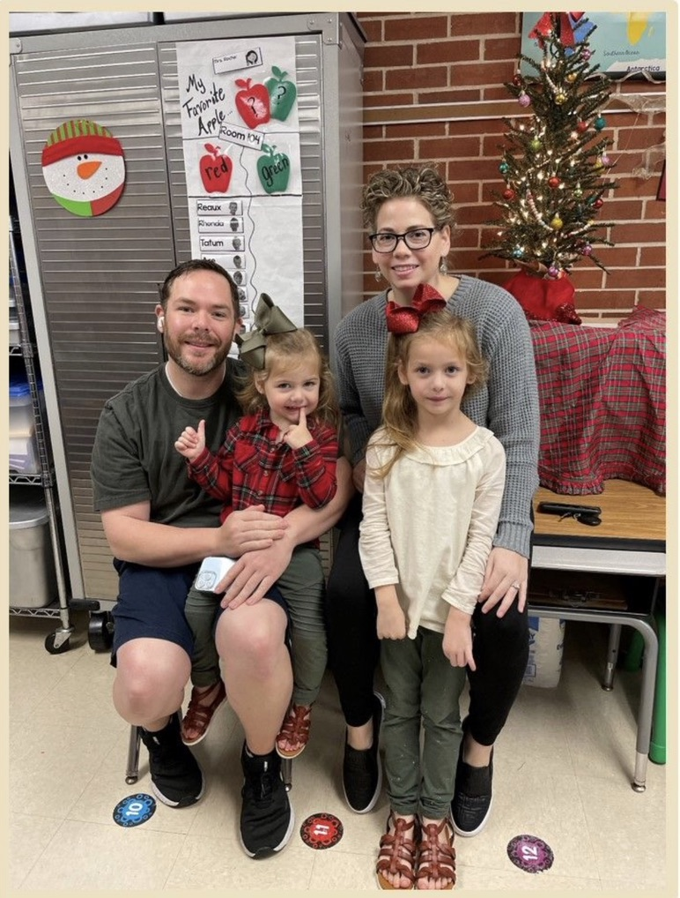

About Me

Kimberly Torres
Kim
Hi everyone. I am Kimberly Torres. I am from a small town in Southeast Texas. My husband and I just celebrated our 15th wedding anniversary. We have two little girls that take up a lot of our time.
I am a pharmcay technician and pursing a degree in applied techology. I work with technology everyday and thought it would be good to learn more of the building blocks behind it all. Our software company that we use at work is amazing and is one of the reasons I chose this degree path.
I have been a member of the Church of Jesus Christ of Latter Day Saints my whole life. My favorite part about the gospel is the truths we have concering eternal families.
I enjoy spending time with my family and watching history documentaries. Manily anything to do with archaeology and it's discoveries. I find history so facinating.